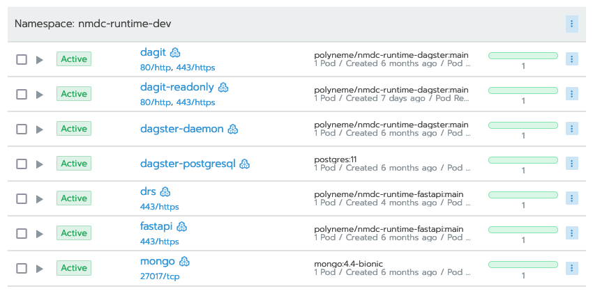

Administration¶
Uptime / System Status¶
The up/down status of NMDC Runtime components is available at https://nmdcstatus.polyneme.xyz/, which currently shows the https://updown.io/p/nia64 status page.
A GET request is done for each registered HTTP resource every hour, with a satisfactory response
time set as 2 seconds. There are three active monitoring locations in North America, and there are
four active notification recipients - dehays, dwinston, and scanon via email; and the
#updown channel in the NMDC Slack organization.
The component containers are hosted on the NERSC Spin system, so NERSC's Live Status page is a place to check if anything is down. Furthermore, note the Planned Outages section of that page, particularly any notices for Spin.
If NERSC Spin is up, and some service appears to be down, check out Spin's Rancher 2 web interface
at https://rancher2.spin.nersc.gov/. The NMDC Runtime system is currently deployed on the
development cluster as part of the NMDC's m3408 project, under the nmdc-runtime-dev namespace.
There, you can examine the workloads in the namespace and troubleshoot as appropriate -- redeploy,
execute a shell in a container to diagnose, view logs, etc. Here is an example screenshot of active
workloads:

Create API Users¶
Users that are admins of the nmdc-runtime-useradmin site may create API users. Currently, these
users are scanon, dehays, and dwinston.
You can see what sites you administer via GET /users/me when logged in.
example GET /users/me result
{
"username": "dwinston",
"site_admin": [
"dwinston-laptop",
"nmdc-runtime-useradmin"
]
}
Log in via your username and password, and POST /users to create a new user. The only required
fields are username and password.
Modifying API permissions¶
For fine-grained control over which users have access to particular API endpoints, you may currently
do so at the code level. A suitable template for this is the implementation of the POST
/users
endpoint. The endpoint code receives the requesting user model via the get_current_active_user
dependency, and it uses the check_can_create_user function to verify that the requester can
administer the "nmdc-runtime-useradmin" site. If not, a 403 Forbidden expection is raised.
Otherwise, the endpoint logic continues for the authorized user.
To add a site ID to an existing user's site_admin list, this must currently be done manually at
the MongoDB document level, rather than via an admin-accessible API endpoint.
MongoDB Administration¶
The MongoDB instance backing the runtime is deployed on NERSC Spin.
The root admin password is stored as the mongo-root-password secret in the nmdc-runtime-dev
namespace on the Spin k8s development cluster
(link).
scanon and dehays have dbOwner roles on the nmdc database.
Tip
There is a nersc-ssh-tunnel target in the repository's
Makefile
that can help you map the remote mongo database to a port on your local machine.
Deployment¶
The release process is administered by the NMDC architecture working group GitHub team. Members of this team have full access to repository administration, including the GitHub Actions.
As for the deployed infrastructure, when manual intervention may be necessary, first check the
Rancher 2 web interface to the NERSC Spin service's Kubernetes clusters, i.e.
https://rancher2.spin.nersc.gov/. The Runtime system is currently deployed on the development
cluster as part of the NMDC's m3408 project, under the nmdc-runtime-dev namespace.
The go-to people to troubleshoot deployment issues within NERSC Spin at this time are shreyas,
dwinston, eecavanna, and scanon.
Databases¶
Data is stored in the nmdc database.
If you need to delete objects copy it to nmdc_deleted database under the corresponding collection
nmdc-schema update¶
- Set the desired version of
nmdc-schemainrequirements/main.in. make update-deps.- commit and push, start PR and seek approval + merge to
main, which will trigger GH actions to deploy.